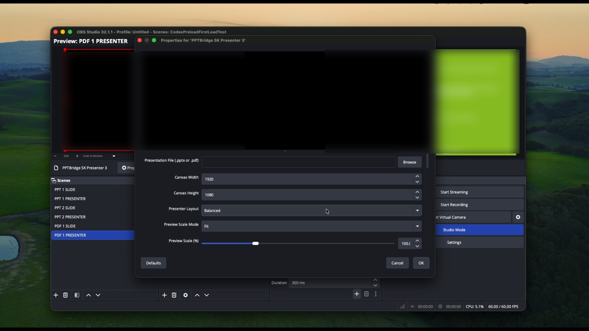
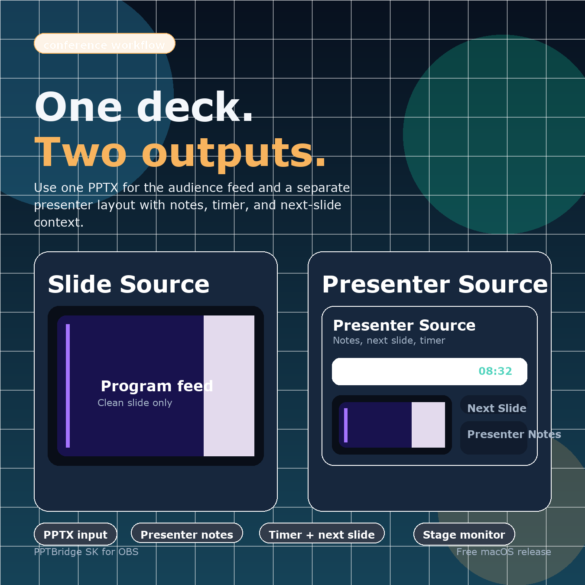

PowerPoint and PDF slides as native OBS sources
PPTBridge SK is a free, open-source OBS Studio plugin. It gives OBS a clean slide output and a separate presenter/confidence view — current slide, next slide, timer, and notes — for live shows, webinars, conferences, and church streams.

Click the preview to watch the 2.5-minute OBS workflow demo.
What it does
PowerPoint is awkward in live production: full-screen takeover, fragile window captures, presenter notes on the wrong screen, and keyboard focus that moves slides by accident. PPTBridge SK keeps the audience feed and the speaker view separate inside OBS.
Clean slide output
The PPTBridge SK Slide source is a clean audience feed for projector, stream, recording, or your switcher — no desktop, no taskbar.
Presenter / confidence view
PPTBridge SK Presenter shows the current slide, next slide, a timer, and speaker notes. Rendered in OBS, so you can resize, crop, and lay it out for any stage monitor.
PowerPoint live mode
Drive the real PowerPoint slideshow with builds, animations, and embedded video, captured cleanly into OBS on macOS.
PDF decks, no PowerPoint
Open a .pdf deck directly — PPTBridge renders and controls it natively, with no PowerPoint required.
Show control built in
Hotkeys, presenter clicker, Bitfocus Companion / Stream Deck, and local OSC with status feedback for QLab or TouchDesigner.
Multi-deck routing
One scene per deck. Hotkeys, OSC, and the clicker follow the deck in the current OBS Program scene, so several presentations stay open without crossing wires.

Install
Quit OBS first. After installing, launch OBS in normal mode (not Safe Mode) so third-party plugins load, then add PPTBridge SK Slide or PPTBridge SK Presenter from the Sources + menu.
macOS Apple Silicon · stable
- Download the Apple Silicon ZIP and unzip it.
- Open
START-HERE-macOS.txt. - Double-click
1-Install-PPTBridge-SK.command(if blocked, right-click → Open). - Let it copy the plugin and open OBS.
- Add
PPTBridge SK Slide/PPTBridge SK Presenter.
Windows beta
- Download the Windows x64 beta ZIP.
- Extract it.
- Double-click
INSTALL.cmd. - Open OBS Studio (30+) with PowerPoint installed.
- Add
PPTBridge SK Slidefor the audience output.
Full guides: Quickstart · Setup guide · Companion / OSC
Control your slides any way you run a show
PPTBridge ignores OBS hotkeys while another app is focused, so typing elsewhere never moves a slide. Turn on global clicker capture only when you want a stage remote to drive slides across apps.
OBS hotkeys
Default 2 = next, 1 = previous. Works while OBS is focused.
Presenter clicker
Spotlight/Clicker Capture maps PageDown/PageUp so a remote works while you use Chrome or OBS.
Companion / Stream Deck
Drive slides from a control surface with no dependence on keyboard focus.
OSC
Local OSC on 127.0.0.1:57130: /pptbridge/next, /previous, /first, /last, /black, /reload — plus status feedback.
FAQ
Is PPTBridge SK free?
Yes — free and open source. The native plugin is GPL-2.0-or-later because it links against OBS Studio. No paywall, no trial.
How do I add PowerPoint to OBS?
Install the plugin, add a PPTBridge SK Slide source, and pick your .pptx. For live mode with animations and video, open the source properties and click START - Open PowerPoint / Start Live Mode. PDF decks render directly without PowerPoint.
How do I install an OBS plugin on macOS?
Download the Apple Silicon ZIP, unzip, and double-click 1-Install-PPTBridge-SK.command. If macOS blocks it, right-click → Open. Then launch OBS in normal mode so third-party plugins load.
Does it work on Windows?
There is a Windows beta installer for PowerPoint live mode on OBS 30+. macOS Apple Silicon is the primary stable build; Windows and Intel Mac are beta while real-hardware feedback is collected.
Do I need PowerPoint installed?
Only for live .pptx mode. PDF decks work without PowerPoint on macOS.
Does it support OSC and Companion?
Yes. Enable Tools > PPTBridge SK: Toggle Local OSC Control. It listens on 127.0.0.1:57130 and accepts next/previous/first/last/black/reload, with OSC status feedback for Companion, QLab, or TouchDesigner.